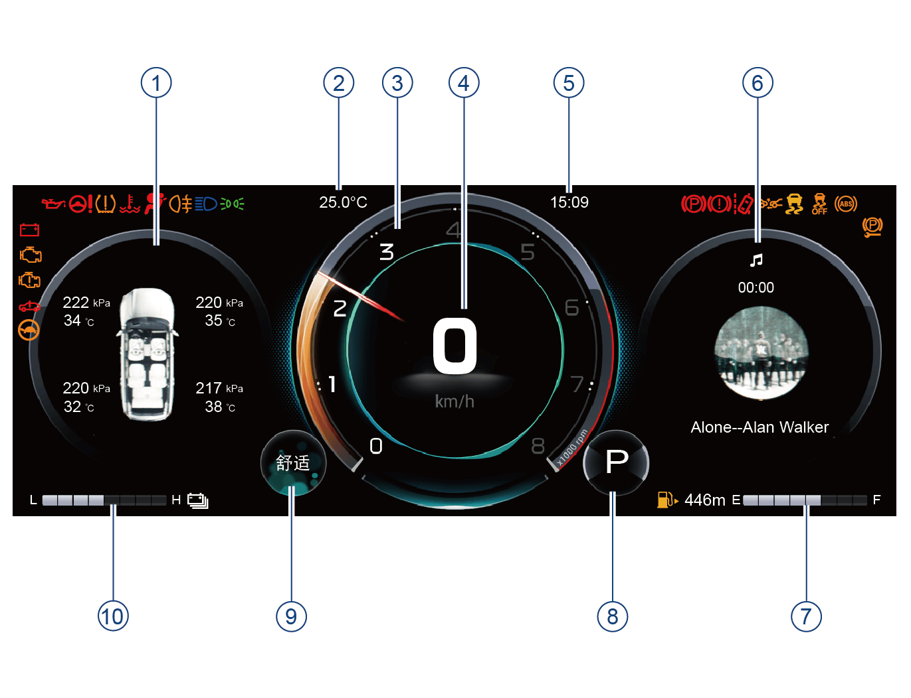

– 包含轮胎压力、温度，车门状态，安全带报警信息。
– 当胎压异常，车门打开或未系安全带时，该页面可以自动弹出。

① 仪表左侧显示屏
② 车外温度显示
③ 转速表
④ 车速表
⑤ 时间显示
⑥ 仪表右侧显示屏
⑦ 燃油表
⑧ 挡位显示信息
⑨ 驾驶模式信息
⑩ 电量表
当切换驾驶模式时，组合仪表根据不同的驾驶模式切换颜色。
①仪表左侧显示屏
–整车电源在“ON”挡位，通过方向盘左侧“OK”按键上拨/下拨查看车辆状态、行车信息、油耗趋势图、雷达报警、ADAS类报警信息、能量流、当前转速、报警中心。

– 包含轮胎压力、温度，车门状态，安全带报警信息。
– 当胎压异常，车门打开或未系安全带时，该页面可以自动弹出。

切换至行车信息界面。
– 行车信息界面包含：本次行驶、累计行驶和总里程。
• 本次行驶：指车辆打开启动开关后单次行驶内的行车信息（本次行驶里程/平均油耗/行驶时间），该车辆参数不可以重新设置。
• 累计行驶：指车辆自从上次复位之后的行车信息（累计行驶里程/平均油耗/行驶时间），该车辆参数可长按“OK”按键清零。
•总里程：指车辆的行驶里程，不可以重新设置。

显示最近50km的油耗趋势和平均油耗（智驾主题仪表除外）。

显示雷达报警信息。
– 在触发的雷达报警时，可以通过按压方向盘左侧“OK”按键对雷达进行静音。
– 雷达报警信息在所有主题下都可显示。
– 当在雷达报警信息消失时，该界面主动消失。

当ADAS功能开启时，显示相应的ADAS信息，包括本车车道偏移、前碰预警、后方来车等信息。
–车辆跳转到智驾主题时，上/下拨动方向盘左侧“OK”按键查看。
–图示以智驾主题为例，仅供参考，请以实车为准。

整车电源在“ON”挡位时，上拨/下拨方向盘左侧“OK”按键，可在组合仪表显示屏上切换至能量流界面，查看混合动力系统的状态。能量流界面显示电池、驱动电机、发动机、车轮之间的能量流动关系以及车轮制动效果。
① 发动机
② 前驱动电机
③ 动力电池
④ 后驱动电机*
⑤ 后车轮*
⑥ 前车轮
–作为示例，图中显示了所有箭头。根据条件，实际显示将有所不同。
–后驱动电机、后轴、车轮制动效果仅在四驱车型上显示。

发动机转速表用于指示发动机当前转速，单位为x1000rpm。
6000~8000rpm为发动机高负荷区域，可能会导致发动机自我保护而断油丧失动力，应避免车辆工作在此区域。

报警中心一般以文字或者图片信息来显示车辆当前的状态，驾驶员应时常留意是否有报警信息。
– 若整车状态无异常，不显示报警信息。
– 若车辆出现故障或者激活/关闭某些功能时，组合仪表会在屏幕上方弹出相应的文字或者图片信息提示驾驶员当前车辆的状态。
– 报警信息弹出后，通过按压方向盘左侧“OK”按键确认后，报警信息会进入到报警中心。
– 如果存在多个报警信息在报警中心，报警中心会显示相应的数字和当前显示的是第几个文字报警。
图示以有机主题为示例，仅供参考，请以实车为准。
② 车外温度显示
–显示当前车辆外面的环境温度。
③ 功率表
功率表用于指示车辆当前的功率：
–CHARGE区域，指示整车回收能量时的功率。
–ECO区域，表示正以环保方式驾驶车辆。
–POWER区域，指示整车输出的功率。
④ 车速表
–车速表用于指示车辆当前车速，单位为km/h，指示范围0～240km/h。
为了行车安全，请严格遵守交通规则，禁止超速行驶。
⑤ 时间显示
– 显示当前时间。
⑥ 仪表右侧显示屏
–整车电源在“ON”挡位，通过短按方向盘右侧音源切换键可切换电台收音信息、音乐信息、电话信息、导航信息。

– 音响系统没有开启时，音响娱乐信息界面会显示“暂无音源”提示。

– 当音响系统开启时，音响娱乐信息显示音响系统当前的播放信息。

– 当音响系统连接手机蓝牙后，有通话时，电话信息在组合仪表显示屏的右下方显示。
– 当使用B-CALL或E-CALL时，电话信息显示B-CALL或E-CALL状态。

切换至导航信息界面（导航主题除外）。
– 当音响系统导航功能开启，根据音响系统的导航功能状态而显示相应的导航信息。
图示以有机主题为示例，仅供参考，请以实车为准。
⑦ 燃油表
燃油表用于指示车辆油箱内当前剩余燃油量。
– 指示范围E~F，其中“E”表示燃油箱空，“F”表示燃油箱加满，根据燃油箱剩余燃油量点亮相应的格数。
– 没有格子或仅第1格格子点亮时，表示燃油箱内燃油不足，组合仪表的指示灯黄色闪烁，文字提醒“燃油低”，提醒驾驶员燃油不足，请尽快加油。
⑧ 挡位显示信息
– 根据接收到的信号显示P、R、N、D等车辆当前挡位信息。
⑨ 驾驶模式信息
– 根据接收到的信号显示车辆当前使用的驾驶模式。
⑩ 电量表
– 指示车辆当前动力电池电量，其中L表示低电量，H表示高电量，根据不同电量点亮相应的格数，未点亮格子为黑色的底色。
图示以有机主题为例，仅供参考，请以实车为准。
若组合仪表显示屏异常显示时，为安全考虑应立即停车，并联系广汽传祺特约店进行检修。

整车电源在“ON”挡位，车速为零时，通过音响系统“设置→屏幕设定→仪表”，对以下功能进行设置：
– 仪表音量
– 累计行驶
– 油耗/里程
– 温度单位
– 压强单位
– 仪表背光
– 后排安全带提醒
– 默认设置
仪表设置详细信息请参见系统设置章节。

整车电源在“ON”挡位，通过短按方向盘左侧“VIEW”按键，进行仪表主题设置。
– 当“ACC”巡航功能未激活时，按“VIEW”按键只在仪表有机主题、导航主题间自由切换；只有在打开ACC/ICA的时候才会自动跳转到仪表智驾主题。
– 当“ACC”功能激活后，无法从仪表智驾主题中切出。
— 页面到底了 —